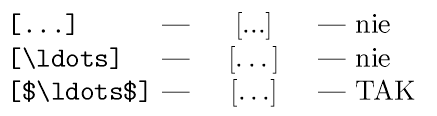

| Autor: | Wojciech Muła |
|---|
Table of contents
x : Type(1 .. 1) := (1 => initial_value);
W ramach głębszego poznawania biblioteki pthreads utworzyłem w serwisie wikibooks opis POSIX Threads, zawierający bardzo podstawowe informacje o większości funkcji tej biblioteki oraz nieco o rozszerzeniach Linuxowej implementacji. Integralną częścią są przykładowe programy.
(Wikibooks niestety nie zyskał takiej popularności, jak Wikipedia, a to całkiem wygodna platforma do tworzenia różnego rodzaju podręczników).
AltiVec definiuje rejestr znaczników w którym aplikacja markuje rejestry wykorzystywane przez siebie (rejestrów jest 32), natomiast system operacyjny wykorzystuje te informacje przy przełączaniu kontekstu. Bardzo pomysłowe.
Inspiracja rozkazami AltiVec, które umożliwiają zwrócenie wektora bitów przeniesień z dodawania/odejmowania, tj. (dla wektora bajtów):
for i:=0 to 15 do
dst[i] = (src[i] + dst[i] > 255) ? 1 : 0
Realizacja MMX/SSE wymaga trochę więcej zachodu:
; xmm0, xmm1 - argumenty
; xmm2 - rej. pomocniczy
movdqa %xmm0, %xmm2
paddb %xmm1, %xmm0 ; suma modulo 256
paddusb %xmm1, %xmm2 ; suma z nasyceniem
pcmpeqb %xmm2, %xmm0 ; 0xff dla tych bajtów, dla których
; nie wystąpiło nasycenie
pcmpeqb %xmm2, %xmm2 ; xmm2 := packed_byte(0xff)
psubb %xmm2, %xmm0 ; xmm0 -- wynik
Dla rozkazu PTEST (SSE4) wiadomo już, że opóźnienie wynosi 1 cykl (patrz najnowsza dokumentacja Intela). Problem z PTEST polega na tym, że jest on dość, hmm... prymitywny.
Wymyśliłem ostatnio trochę inne rozkazy, które wpływałyby na rejestr EFLAGS: nazwijmy jest PTESTANY i PTESTALL.
Oba przyjmują trzy argumenty:
Stała imm8 wybiera bit 0..7 — ze wszystkich bajtów XMM tworzone słowo 16-bitowe word16 wykorzystując wskazany bit (czyli taki bardziej ogólny PMOVMSKB).
Następnie dla rozkazu PTESTANY sprawdza się czy word16 AND imm16 jest niezerowe — tj. przynajmniej jeden niezamaskowany bit ustawiony. Natomiast dla rozkazu PTESTALL, sprawdza się czy word16 OR imm16 jest równe 0xffff — tj. wszystkie niezamaskowane bity ustawione.
Wynik testu byłby przepisywany np. do CF. Dodatkowo można jeszcze sprawdzać czy word16 = 0 i wykonywać testy bez maskowania. W sumie rozkazy ustawiałyby trzy flagi:
mask := conv(imm8); { maska bitowa }
bit := 0x0001;
word16 := 0x0000;
{ utworzenie słowa }
for i := 0 to 16 do
begin
if XMM[i] AND mask then
word16 := word16 or bit;
bit := bit SHL 1;
end;
{ PANY }
ZF := (word16 = 0);
CF := (word16 AND imm16 <> 0);
SF := (word16 <> 0);
{ PAND }
ZF := (word16 = 0);
CF := (word16 OR imm16 = 0xffff);
SF := (word16 = 0xffff);
aspell dump master lang_code | aspell expand | tr " " "\n"
Pewien anonimowy wykładowca miał powiedzieć, iż za pomocą pętli for można zrobić wszystko, może za wyjątkiem dzieci. Więc ja uważam, że jeśli chodzi o pythonową funkcję reduce (znaną w językach funkcyjnych jako foldl, tj. fold left) to za jej pomocą można wszystko, łącznie z dziećmi, a nawet bliźniakami.
Poniżej garść przykładów, m.in. funkcja groupby — którą kiedyś potwornie umordowałem na potrzeby pydvi2svg — teraz jest krótka, prosta, wydajna.
def groupby(seq, value=lambda x: x): def aux((vp, L), curr): vc = value(curr) if vp == vc: L[-1].append(curr) else: L.append([curr]) return (vc, L) return reduce(aux, seq, (aux, []))[1] def groupby2(seq, value=lambda x: x): def aux((vp, L), curr): vc = value(curr) if vp == vc: L[-1][1].append(curr) else: L.append( (vc, [curr]) ) return (vc, L) return reduce(aux, seq, (aux, []))[1] def groupby3(seq, cmpfun=lambda x, y: x == y): def aux((prev, L), curr): if cmpfun(prev, curr): L[-1].append(curr) else: L.append([curr]) return (curr, L) return reduce(aux, seq, (aux, []) )[1] def flatten(seq): def aux(L, Li): L.extend(Li) return L return reduce(aux, seq, []) def partition(seq, pred=bool): def aux((L1, L2), item): if pred(item): L1.append(item) else: L2.append(item) return (L1, L2) return reduce(aux, seq, ([], [])) def unzip2(seq): def aux((L1, L2), (x1, x2)): L1.append(x1) L2.append(x2) return (L1, L2) return reduce(aux, seq, ([], []))
Martin Kraus stworzył i udostępnił zestaw apletów JAVA prezentujących różne algorytmy związane z krzywymi i powierzchniami parametrycznymi (algorytm de Casteljau, de Boora, podział krzywej, podnoszenie stopnia, wstawianie węzłów i sporo innych) jak i pokazujące różne cechy tych obiektów (krzywizna, niezmienniczość afiniczna krzywych wielomianowych, itp.).
Bardzo interesujące, porządnie wykonane — polecam!
http://www.vis.uni-stuttgart.de/%7Ekraus/LiveGraphics3D/cagd/index.html
Będzie to kolejna opowieść z serii: „W Pythonie można wiele rzeczy zrobić szybko i wygodnie, a nawet szybciej i wygodniej niż w X”.
Kiedyś napisałem dość spory skrypt XSLT tłumaczący XML z glosariuszem na wzajemnie połączone pliki HTML. Całkiem fajnie to wyszło, ale już podział na odrębne pliki musiałem robić zewnętrznym skryptem w AWK. Później miałem jeszcze dorobić drugi skrypt XSLT-owy, który tłumaczyłaby ów XML na LaTeX-a, ale dałem sobie spokój, bo było tam parę rzeczy do rozwiązania, między innymi automatyczne zapobieganie pojawianiu się sierot. W sumie można było znów dopisać jakieś narzędzie w AWK, ale rozmyśliłem się i ostatecznie postanowiłem zrobić wszystko w Pythonie. Chociaż rozmiar XSLT-owego skryptu (10kB, nieco ponad 1000 wierszy) trochę odstraszał — komu się chce robić drugi raz to samo...
W zasadzie kluczowym elementem, decydującym o sukcesie, była jedna funkcja (a w zasadzie funkcyjka), która automatycznie przechodziła dokument XML-owe wszerz i wywoływała zarejestrowane funkcje przekształcające zawartość konkretnych tagów:
def apply(element, tags=None):
result = ”
try:
if not tags:
for child in element.childNodes:
result += __callbacks[child.nodeName](child)
else:
for child in element.childNodes:
name = child.nodeName
if name == '#comment': pass
elif name in tags or name == '#text':
result += __callbacks[name](child)
except KeyError, e:
log.error("Handler for <%s> undefined." % e)
raise KeyError(str(e))
return result
Jest to mniej więcej odpowiednik XSLT-owego match — nie ma tylko argumentu mode, którego nie potrzebowałem.
Słownik callbacks zawiera odwzorowanie nazwa taga -> funkcja [zwracająca łańcuch znaków]. Wszystkie funkcje nazywałem wg schematu element_xxx gdzie xxx to nazwa taga i wówczas ich rejestracja w Pythonie okazała się banalna:
def register_all(namespace, prefix='element_'):
global __callbacks
for name, object in namespace.iteritems():
if not name.startswith(prefix): continue
if not callable(object): continue
tag = name[len(prefix):]
__callbacks[tag] = object
Dzięki function factory („generatory funkcji”?) tworzenie funkcji transformujących było banalne. Oto kawałek kodu dokonującego przekształcenia XHTML na LaTeX-a (we wspomnianym glosariuszu używam XHTML-a plus kilka dodatkowych tagów):
def repl(start_tag, end_tag, tags=None):
"<tag>...</tag> -> start_tag + ... + end_tag"
def element_fun(element):
return start_tag + apply(element, tags) + end_tag
return element_fun
def tex(name, tags=None):
"<tag>text</tag> => \name{text}"
return repl("\\" + name + "{", "}", tags)
def texenv(name, tags=None):
return repl("\\begin{"+name+"}\n", "\\end{"+name+"}\n", tags)
element_b = tex('textbf')
element_i = tex('textit')
element_u = tex('underline')
element_center = texenv('center')
element_blockquote = texenv('quotation')
# itd.
# w zasadzie tylko kilka funkcji element_xxx musiałem
# "ręcznie wklepywać"
Ostatecznie wyszło dwa razy mniej kodu niż w XSTL, programy są o wiele prostsze i wszystkie rzeczy (podział na pliki, jakieś dodatkowe transformacje tekstu) pozałatwiane w jednym miejscu.
Jak to ktoś ładnie napisał na temat Pythona: „Who Needs the Toolbox When You Have a Toolmaker?” (podkreślenie moje).
Swego czasu robiłem wersję elektroniczną pewnej publikacji i należało jakoś wstawić do PDF-a dwie ilustracje (skan okładki i coś jeszcze) jako całe strony.
Udało się to uzyskać z użyciem standardowego LaTeXowego środowiska picture z obrazkiem przeskalowanym do rozmiarów \pagewidth/\pageheight. Jedyny problem, który z początku wydawał się „problemikiem na pół kwadransa”, polegał na dosunięciu obrazka do lewego górnego rogu strony. Przyznaję, że wówczas zrobiłem to „najszlachetniejszą matematyczną metodą”, czyli metodą prób i błędów.
Jednak po pewnym czasie zagłębiłem się w „latechową marginesologię”, czego efektem jest polecenie \imageaspage, które wstawia wskazany obrazek jako stronę; wydaje się, że robi to dobrze niezależnie od ustawionych marginesów.
Źródła dostępne na https://github.com/WojciechMula/tex/tree/master/imageaspage
Obserwując w jaki sposób mniej lub bardziej popularne procesory tekstu (MS Word, OpenOffice, AbiWord) składają tekst, uważam że w ich przypadku skrót WYSIWYG powinno się tłumaczyć jako „Na wydruku będzie tak samo brzydko, jak na ekranie”.
Tkinter Events Serializer został uaktualniony.
Dostępne są teraz dwie klasy realizujące szeregowanie zdarzeń:
Klasa EventsSerializer jest aliasem albo dla klasy „wątkowej” (jeśli dostępne są moduły Queue oraz thread) albo „tkinterowej” (w przeciwnym razie).
fbi_text to program proof-of-concept, którego zadaniem jest pokazanie, że w Linuksie można wszystko, tylko nie wszystko jeszcze zostało napisane.
fbi_text wyświetla czarno-białe obrazki bezpośrednio na konsoli, podmieniając na chwilę fonty, tak żeby wyświetlone obok siebie znaczki reprezentowały obraz. Na kartach EGA/VGA w standardowym trybie tekstowym 80x25 znaków glify mają rozmiar 8x16 pikseli, dostępnych znaków jest przynajmniej 256[1], więc jeśli wyświetlimy te 256 znaków w 16 wierszach mamy obraz 128x256 pikseli i tak też ustawiłem w fbi_text.
[1] Dostępne jest 512, ale mnie się nie udało tylu użyć i w sumie nie zagłębiałem się w to dokładnie.
Jednak karty EGA/VGA domyślnie nie wyświetlają znaków o szerokości 8 pikseli, ale 9. W większości przypadków 9. kolumna jest pusta (dodatkowy odstęp) ale dla znaków z zakresu 0xC0-0xDF 9. kolumna jest powieleniem ostatniej (semigrafika). Dlatego niestety obrazek będzie „pocięty” pionowymi czarnymi kreskami.
Ale nie wszystko tak do końca stracone — jeśli masz dostęp do konta roota, uruchom program z opcją „root”, wówczas jeśli będzie to możliwe program spróbuje przeprogramować kartę tak, żeby znaki miały naprawdę 8 pikseli szerokości i wówczas zobaczymy niezakłócony obraz.
Screen jest bardzo użytecznym narzędziem i ma pewną cechę, która może być użyteczna w programach.
Mianowicie screen rozpoznaje Privacy Messages — sekwencję sterującą ESC^tekstESC\, która pojawienie się powoduje wyświetlenie w wierszu statusu podanego tekstu. (Niby fajnie, ale niestety na czas wyświetlania komunikatu nasz program jest blokowany...)
Żeby stwierdzić, czy program jest uruchomiony z poziomu screena, należy sprawdzić, czy jest ustawiona zmienna środowiskowa STY.
Czyli jak oznaczyć opuszczenie cytatów i nie zrobić tego źle:
(Stosowanie „(...)” jeśli nawet nie jest błędem, powoduje dyskomfort estetyczny).
Ograniczenia na liczbę argumentów makra można „złamać” korzystając z wcześniej opisanych własności plain-TeX-owych oraz rekurencji. Tak, TeX potrafi rekurencyjnie rozwijać makra (do chwili wyczerpania pamięci).
Pokażę jak można podać jako argument dowolnie długą listę elementów oddzielonych przecinkami; rzecz jasna można użyć innych znaku/znaków do rozdzielania elementów.
W tym celu trzeba zdefiniować dwa makra: jedno które będzie rozwijało się rekursywnie, oraz drugie (główne) inicjujące rekursję — wywołujące pierwsze makro z odpowiednimi parametrami:
\def\foorec#1,#2:{%
— `#1'\par
\def\tempa{}%
\def\tempb{#2}%
\ifx\tempa\tempb
\else
\foorec#2:
\fi
}
\def\foo#1{\foorec#1,:}
Makro \foorec rozbija argument na dwie części: #1 przechowuje głowę listy (ciąg znaków ograniczony przecinkiem), natomiast #2 ogon listy (ciąg znaków ograniczony dwukropkiem, wybranym tutaj z braku lepszego pomysłu). Na początku makro wykonuje działanie na głowie listy (#1): w tym przypadku wypisuje ją w nowym akapicie poprzedzając pauzą.
Następnie jeśli ogon (#2) jest pusty, to rekursja w tym miejscu się kończy. Jeśli nie, wywoływane jest makro \foorec z argumentem będącym ogonem listy.
Zadaniem makra \foo jest ograniczenie listy (wstawienie dwukropka) oraz wstawienie na koniec listy pustego elementu (gwarantującego zakończenie rekursji).
Przykład wykorzystania (12 argumentów):
\foo{one,two,three,four,five,six,seven,eight,nine,ten,eleven,twelve}
Ludzie używający LaTeX-a chyba nieczęsto sięgają do plain-TeX-owych konstrukcji. A czasem warto. W przypadku definiowania funkcji używamy polecenia \newcommand lub \renewcommand — TeX-owa konstrukcja \def daje więcej możliwości.
Rozdzielając argumenty makra definiowanego przy użyciu \def ciągami znaków zmuszamy TeX-a do bardziej zaawansowanego parsowania:
\def\bold#1:{\textbf{#1}:\ }
\bold Pytanie: kiedy Python jest lepszy? \bold Odpowiedź: Zawsze!
Makro \bold jako argument weźmie cały ciąg do znaku dwukropka („zjadając” dwukropek). To tylko prosty przykład, ale już pokazuje, że nie zawsze trzeba męczyć się z klamerkami.
Weźmy inny przykład, bardziej skomplikowany, w którym data zapisana w stylu anglosaskim (rok/miesiąc/dzień) jest zamieniana na polski zapis (dzień.miesiąc.rok) - uwaga, istotna jest spacja po #3:
\def\rdate#1/#2/#3 {#3.#2.#1 }
Od \rdate 2006/05/17 do \rdate 2006/05/19 pada deszcz.
Sumując: dzięki zastosowaniu \def można w niektórych przypadkach znacząco uprościć sobie robotę.
Zapewne każda osoba zainteresowana grafiką komputerową, w szczególności krzywymi i powierzchniami parametrycznymi zna klasyczną już książkę dra Przemysława Kiciaka Podstawy modelowania krzywych i powierzchni (WNT, 2005). W sieci znalazłem dwie niezwykle interesujące pozycje w tym temacie, które wg mnie są doskonałym uzupełnieniem i rozszerzeniem książki:
Polecam również uwadze wyśmienity modeler rozpowszechniany na licencji BSD Ayam autorstwa Randolfa Schultza.
Postanowiłem policzyć częstość występowania poszczególnych rozkazów procesora w statystycznym programie (zdisabemblowałem większość programów z /usr/bin). Zapraszam do zapoznania się z wynikami. Proszę zobaczyć ile instrukcji występuje ledwie kilkadziesiąt, czy nawet kilka razy! A niektórych instrukcji z listy rozkazów x86 w ogóle nie ma!
Co to znaczy? Ano że niektóre rozkazy są albo całkowicie zbędne, albo że można się bez nich objeść. Zauważono to kilkanaście lat temu, co stało się impulsem do stworzenia architektury RISC, której główną cechą była zredukowana liczba rozkazów, ograniczona tylko do rozkazów najbardziej podstawowych i potrzebnych.
Więcej o tej architekturze na Wikipedii.
GCC kompiluje powyższe wyrażenie do czegoś takiego:
xor edx, edx fld [x] fldz fucom st1 fnstsw ax sahf jb zero fld1 fucompp st1 fnstsw ax sahf jb label mov ebx, byte 1 jump one: zero: fstp st0 one: mov eax, edx ret
Pytanie jest następujące — czy można prościej? Odpowiedź: tak, wykorzystując operacje całkowitoliczbowe.
int myrange01(float x) { uint32_t bin = *(uint32_t*)&x; if ((bin & 0x7fffffff) == 0) // x = +/-0.0 return 1; if ((bin & 0x80000000) == 0x80000000) // x < 0 return 0; if (bin > 0x3f800000) // exp > 1.0 return 0; else return 1; }
Dygresja: proszę zauważyć — mamy cudowny Pentium IV złożony z kilku milionów tranzystorów, mamy nowoczesne instrukcje MMX, SSE, SSE2, a nawet SSE3. I pomimo tak wielkiego postępu nikt w Intelu nie wpadł na pomysł, że może byłoby dobrze dodać instrukcje porównujące liczby zmiennoprzecinkowe, które bezpośrednio modyfikowałyby flagi ALU. W XXI wieku trzeba robić takie chore sztuczki, po prostu paranoja!